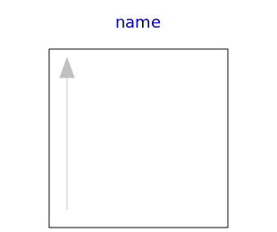

.
Modelica
.
Math
.
Icons
Information
Icons for Math
Contents
Name
Description

AxisLeft
Basic icon for mathematical function with y-axis on left side
AxisCenter
Basic icon for mathematical function with y-axis in the center
Generated at 2018-09-28T09:15:45Z by
OpenModelica
OpenModelica 1.13.0~dev-1432-g3445e57